What does this error code mean?
An offline decoder with the link to the official page. A code it does not know stays unknown: it never guesses.
U1 case file, read-only
A local tool that reads your printer's logs and gives you proof you can read, keep and show.
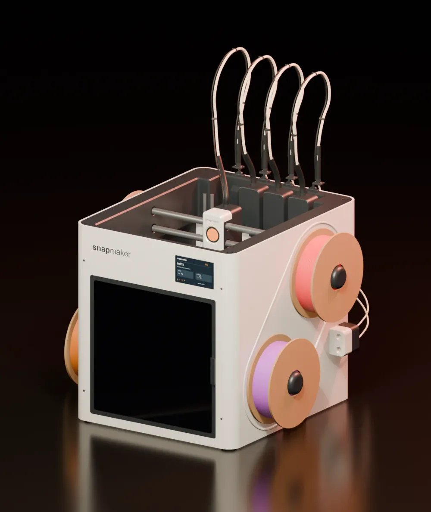
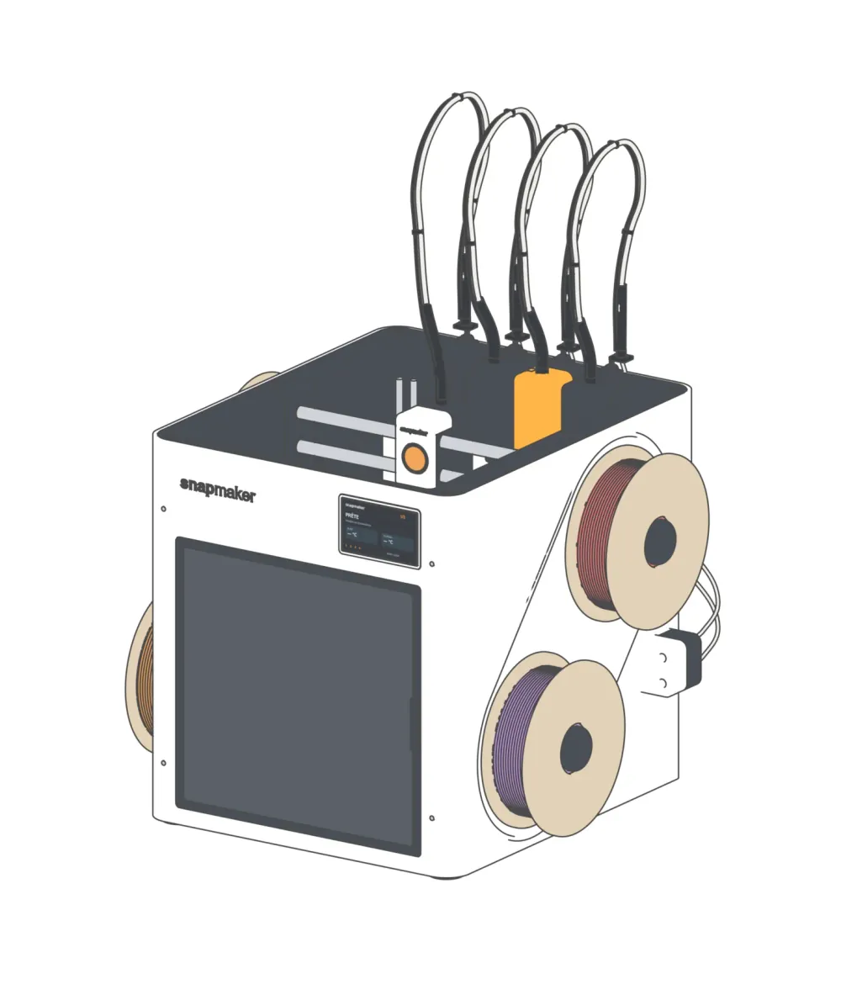
1 2 3The logs exported from the U1 are encrypted: only Snapmaker support can open them. U1 Doctor gives the owner evidence they can read. It never drives the printer.
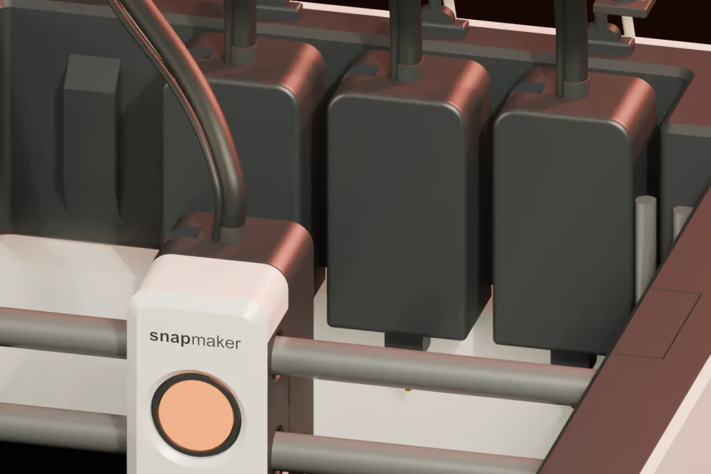
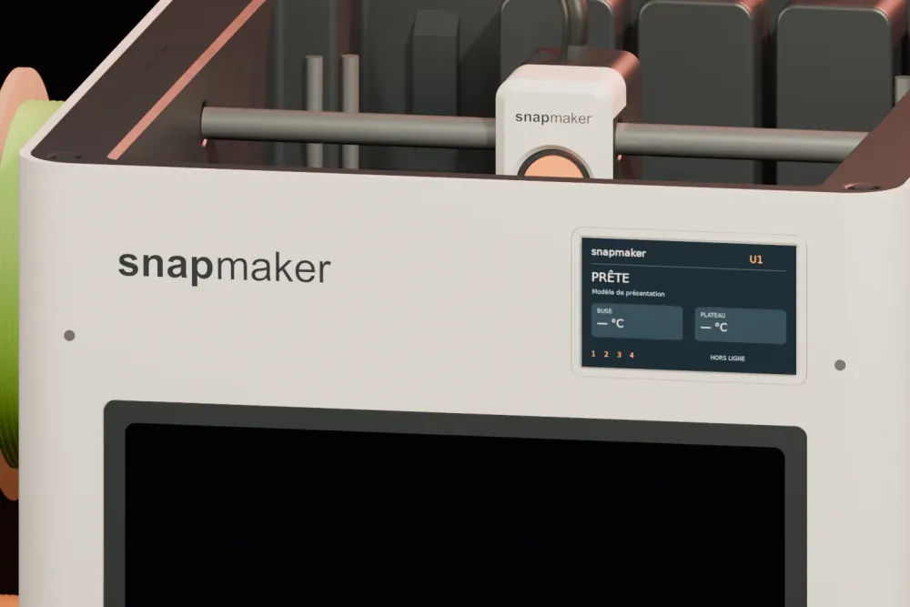
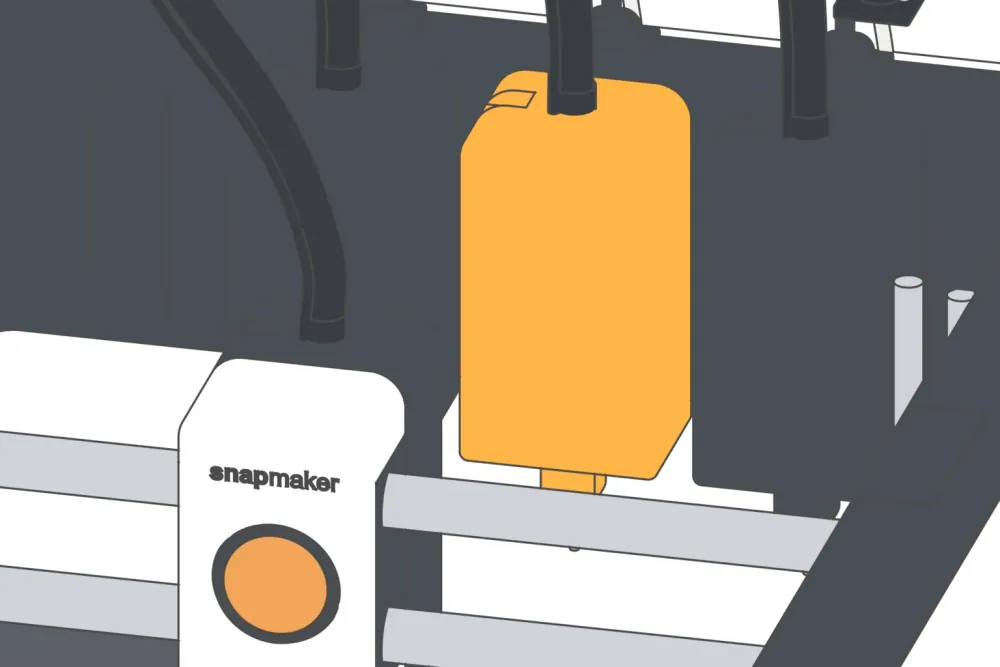
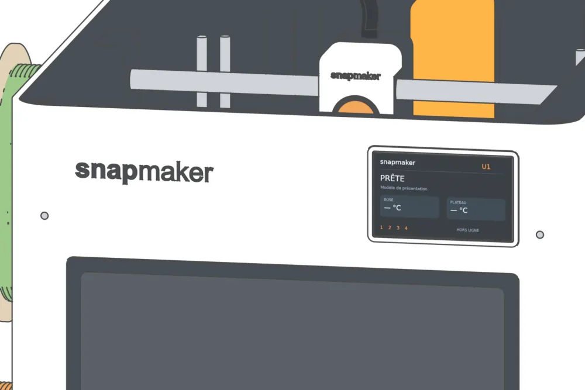
An offline decoder with the link to the official page. A code it does not know stays unknown: it never guesses.
A timeline built only from observed facts. Gaps stay gaps, and every line keeps its source.
A portable evidence bundle, U1-DEB, that anyone can open and replay on their own machine.
With firmware notes, the toolheads to inspect and what support will ask you.
Phases, explicit gaps, and how reliable each timestamp is.
Evidence for, evidence against, what is missing and the limits. No score.
The replay gives the same result on Windows, Linux and macOS, checked in CI.
An AES-256 zip for Snapmaker support, after a privacy scan of what goes in.
Screens of the current release. The incident you see is synthetic and labelled as such in the app.
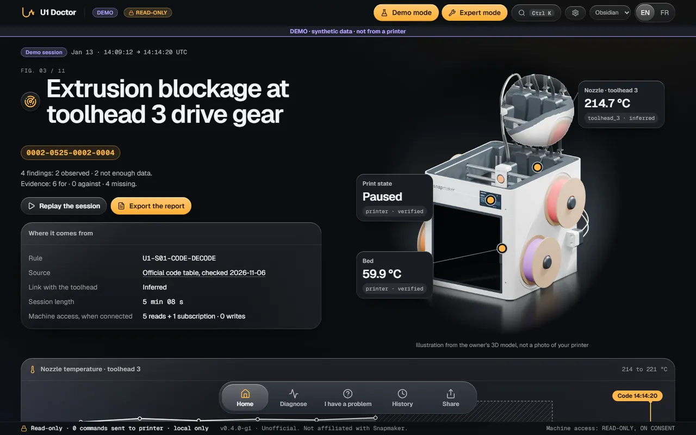
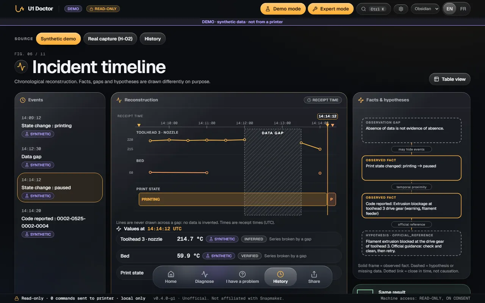
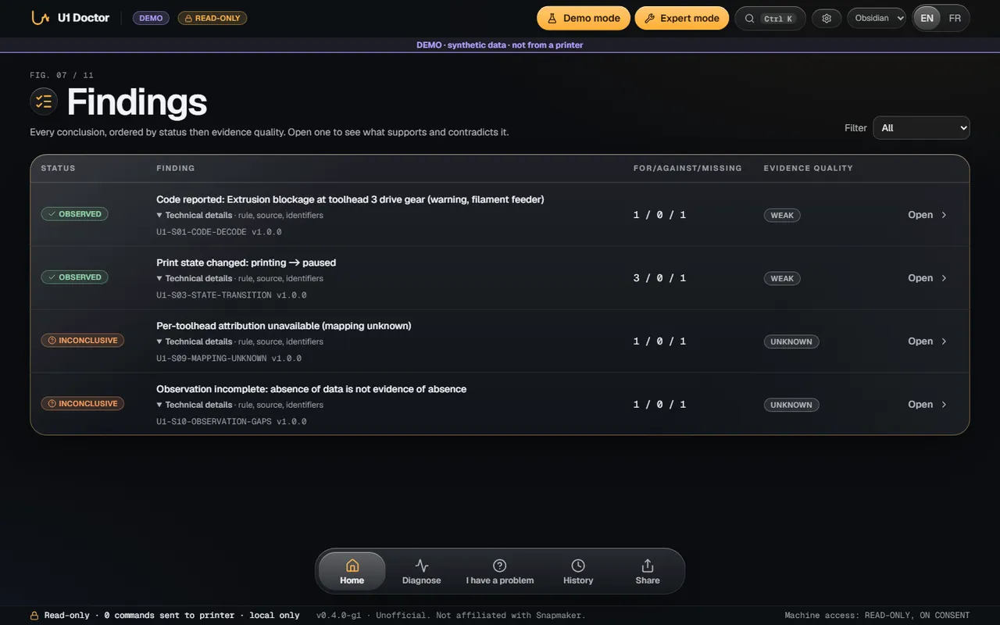
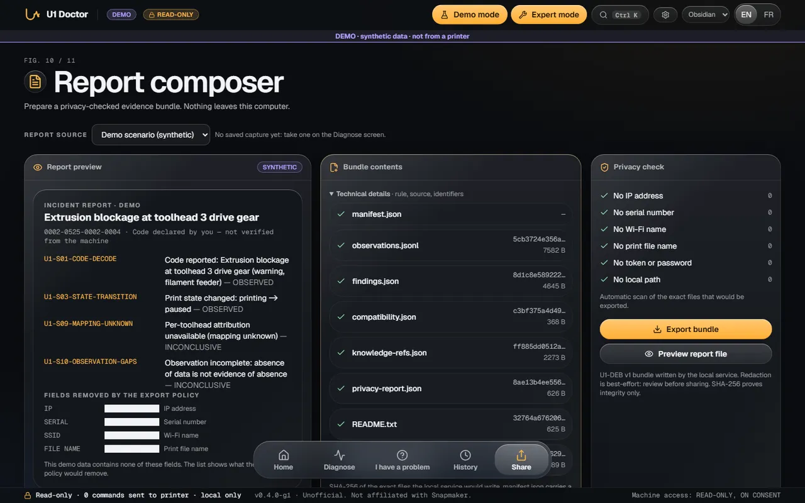
Open the sample reportFour themes, same facts. A theme changes the look, never what the app says.
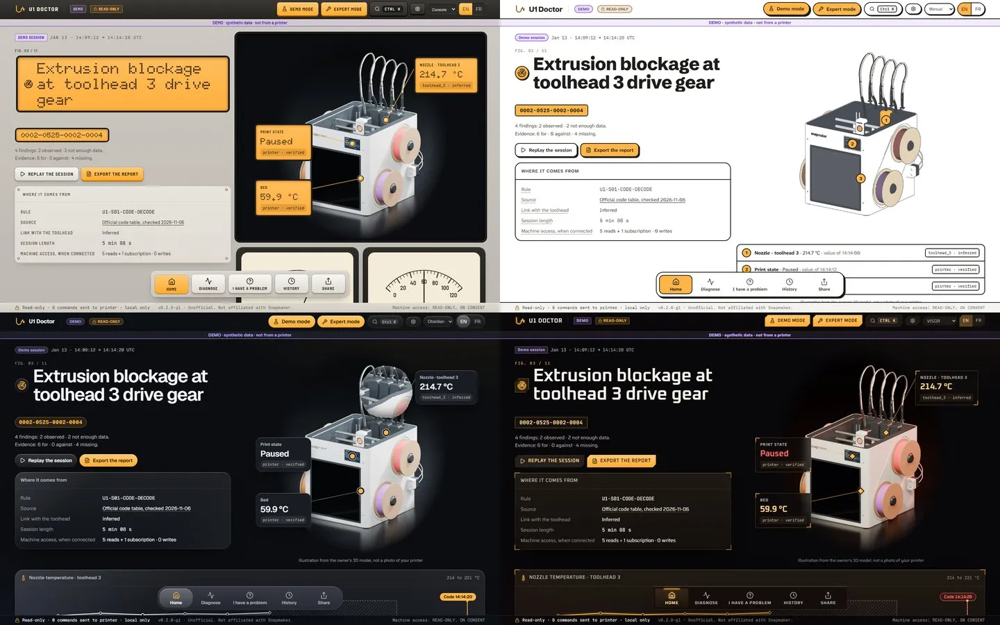
It runs in your browser, on the official catalog. Nothing you type leaves this page.
Enter a code such as 0001-0523-0000-0037, or try one of these.
One zip for Windows. Nothing to set up, no account.
From the latest release on GitHub.
Right-click, Extract all. WinRAR or 7-Zip drop the mark Windows uses for SmartScreen. Then double-click u1-doctor.exe.
Switch on Demo mode to see everything on labelled synthetic data. Open Diagnose when you want to read your own U1.
So far only normal prints have been captured: every incident in the app is synthetic. If your U1 stops, your report moves the whole project forward.
No. Nothing is sent anywhere. There is no cloud and no telemetry, and you can check the source.
No. It is read-only: it reads what the printer reports and never sends a command.
Because a result must be replayable, byte for byte. The same observations and the same rules always give the same answer.
No. It is an independent project. Every code links to the official wiki page it comes from.
The app ships as a Windows zip with its checksum. The engine is tested in CI on Windows, Linux and macOS.